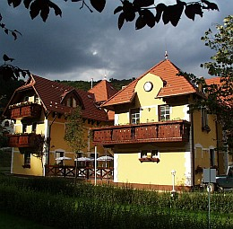

<!DOCTYPE html>
<html lang="hu" xmlns="http://www.w3.org/1999/xhtml"></html>
<head>
    <meta charset="UTF-8">
    <meta name="viewport" content="width=device-width, initial-scale=1.0">
    <title>hotelszeleta</title>
    <link href="https://cdn.jsdelivr.net/npm/bootstrap@5.3.2/dist/css/bootstrap.min.css" rel="stylesheet" integrity="sha384-T3c6CoIi6uLrA9TneNEoa7RxnatzjcDSCmG1MXxSR1GAsXEV/Dwwykc2MPK8M2HN" crossorigin="anonymous">
    <link rel="stylesheet" href="indexstillap.css">
</head>
<body>
    <header>
        <h2>
            <span style="--i:1;">H</span>
            <span style="--i:2;">O</span>
            <span style="--i:3;">T</span>
            <span style="--i:4;">E</span>
            <span style="--i:5;">L</span>
            <span style="--i:6; margin-left:1vw ;">S</span>
            <span style="--i:7;">Z</span>
            <span style="--i:8;">E</span>
            <span style="--i:9;">L</span>
            <span style="--i:10;">E</span>
            <span style="--i:11;">T</span>
            <span style="--i:12;">A</span>
        </h2>
    </header>

    <div class="container" id="kepek1">
        <div class="row border border-3">
            <div class="col"></div>
            <div class="col"></div>
            <div class="col"></div>
            <div class="col"></div>
            <div class="col"></div>
        </div>
    </div>

    <nav>
        <td>
            <ul>
                <li><a href="szolgaltatas.html">Szolgáltatások</a></li>
                <li><a href="latnivalo.html">Látnivalók</a></li>
                <li><a href="galeria.html">Galéria</a></li>
                <li><a href="arakhtml.html">Árak</a></li>
                <li><a href="eljutas.html">Eljutás</a></li>
            </ul>
        </td>
    </nav>
    <section id="cimek">
        <td>
            <h1>Hotel festői környezetben!</h1>
            <h3><b>Hotelünk</b> a Bükki Nemzeti Park területén, Lillafüred közelében, Miskolc-Alsóhámorban <b>található.</b></h3>
        </td>
    </section>
    <section id="tartalom">
        <h5><li>
            A szálloda két épületből és egy különálló recepcióból áll, melyet körbe ölel a Szinva patak halk csobogása, a Bükk friss levegője és az erdő. 
            Rendelkezünk részben fedett – autóbuszok fogadására is alkalmas – parkolóval, illetve tágas pihenőkerttel, ahol több lehetőség közül választhatnak 
            a mozgás szerelmesei, valamint játszóterünk várja a gyermekeket.
        </li></h5>
        <h5><li>
            A tapolcai Barlangfürdő, a Diósgyőri Vár, a bánkúti sícentrum és egyéb nevezetességek rövid autózással, vagy akár tömegközlekedéssel is elérhetőek. 
            A Miskolcra látogató üzletemberek számára is felüdülést, felfrissülést ad a néhány természetben eltöltött óra.
        </li></h5>

    </section>
    
    <section id="cimek">
        <td>
            <h3>A szálloda 3 lakosztállyal, valamint 22 kétágyas szobával rendelkezik.</h3>
        </td>
    </section>

    <section id="tartalom">
        <h5><li>
            A lakosztályba belépve egy csigalépcső vezet fel az előszobába, melyből nyílik a nappali (erkéllyel), a hálószoba, illetve a fürdőszoba. 
            A nappali szoba egy nagy mérető sarokülővel, beépített bútorokkal, asztallal, székkel, puffokkal, fotelággyal, állóventilátorral, TV-el, telefonnal, 
            minibárral van felszerelve. A hálóban összetolt ágyak, beépített bútorok, íróasztal, szék, TV található. A fürdőszoba zuhanykabinnal, WC-el ellátott.
             Amennyiben kettőnél többen érkeznek, úgy lakosztályt szoktuk ajánlani, mert tágasabb és lehetőség van a sarokülőt akár 2 fő részére is fekhellyé alakítani, 
             illetve további 1 főt tudunk elhelyezni a fotelágyon. Babaágyat természetesen térítésmentesen biztosítunk.
        </li></h5>
        <h5><li>
            A lakosztályba belépve egy csigalépcső vezet fel az előszobába, melyből nyílik a nappali (erkéllyel), a hálószoba, illetve a fürdőszoba.
             A nappali szoba egy nagy mérető sarokülővel, beépített bútorokkal, asztallal, székkel, puffokkal, fotelággyal, állóventilátorral, TV-el, telefonnal, 
             minibárral van felszerelve. A hálóban összetolt ágyak, beépített bútorok, íróasztal, szék, TV található. A fürdőszoba zuhanykabinnal, WC-el ellátott.
              Amennyiben kettőnél többen érkeznek, úgy lakosztályt szoktuk ajánlani, mert tágasabb és lehetőség van a sarokülőt akár 2 fő részére is fekhellyé alakítani, 
              illetve további 1 főt tudunk elhelyezni a fotelágyon. Babaágyat természetesen térítésmentesen biztosítunk.
        </li></h5>
        <h5><li>
            A szobákat 14:00 órától lehet elfoglalni és 10:00 óráig kell elhagyni.
            Felhívjuk kedves vendégeink figyelmét, hogy 1 szobafoglaláshoz – a Hotel Szeleta előzetes engedélyének a hiányában – maximum 1 személygépkocsi vagy 2 motorkerékpár részére 
            tudunk díjmentes parkolást biztosítani a Hotel területén. Autóbusz, illetve mikrobusz részére kizárólag előzetes megállapodást követően tudunk parkolást biztosítani.
        </li></h5>
    </section>

    <section id="kapcsolatok">
        <p>Írj nekem az alábbi űrlapon:</p>
        <form id="contact-form">
            <label for="name">Név:</label>
            <input type="text" id="name" name="name" required>
            <label for="email">Email:</label>
            <input type="email" id="email" name="email" required>
            <label for="message">Üzenet:</label>
            <textarea id="message" name="message" required></textarea>
            <button type="submit">Küldés</button>
        </form>
    </section>
    <footer>
        <p>
            Információ (recepció):
            +36 46 530 130
        </p>
    </footer>
</body>
</html>